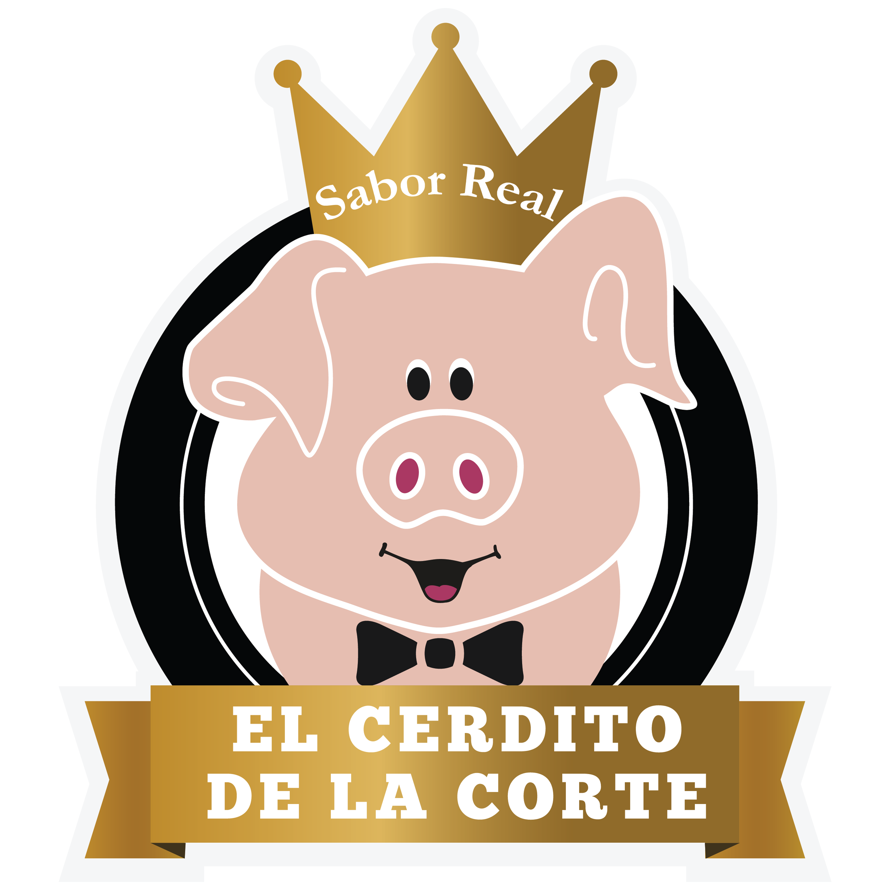

Contacto
 |
Cl. 42 A bis Sur # 90 A - 88, Bogotá D.C |
 |
cristianurielb@gmail.com cristian.urielb@outlook.com |
 |
|
 |
Ingeniería de Sistemas
| Ingeniería en Sistemas. | CUN. (En curso) |
| Tecnología en Desarrollo de Software. | CUN. (En proceso de titulación) |
| Técnico Profesional en Soporte de Sistemas e Informática. | CUN. (2020) |
| Técnico en Sistemas. | SENA. (2017) |
Educación Informal |
|
| Diplomado en Desarrollo de Aplicaciones Orientada a Objetos con JAVA |
CUN (2019) |
| EL CERDITO DE LA CORTE | MAY 2022 - A la fecha | |
| SMART PAYMENT, Analista en Mesa de Ayuda | JUN 2020 - AGO 2020 | - SQL server: consultas en SQL server, actualización, inserción y
eliminación de datos, procedimientos almacenados, depuración de
datos, creación de tablas, creación de llaves foráneas. - Excel: funciones, tablas dinámicas, Marcos, informes, cruces de datos. - Soporte: dar soporte telefónico, en sitio y control remoto a los diferentes aplicativos utilizados en la empresa, impresoras, scanner, Windows 10, Microsoft office y libre office. - Microsoft Office: combinación de correspondencia, presentaciones, videos. |
| RURAL EXPRESS S.A.S., Auxiliar de Tecnología e Informática | DIC 2017 - JUN 2020 | - SQL server: consultas en SQL server, actualización, inserción y
eliminación de datos, procedimientos almacenados,
depuración de datos, creación de tablas, creación de llaves
foráneas. Administración y generación de informes
semanales/mensuales. - Excel: funciones, tablas dinámicas, Marcos, informes, cruces de datos. - Soporte: dar soporte telefónico, en sitio y control remoto a los diferentes aplicativos utilizados en la empresa, impresoras, scanner, Windows 10, Microsoft office y libre office. - Microsoft Office: combinación de correspondencia, presentaciones, videos. |
| RURAL EXPRESS S.A.S., Aprendiz SENA | JUN 2017 - DIC 2017 | - SQL server: consultas en SQL server, actualización, inserción y
eliminación de datos, procedimientos almacenados,
depuración de datos, creación de tablas, creación de llaves
foráneas. Administración y generación de informes
semanales/mensuales. - Excel: funciones, tablas dinámicas, Marcos, informes, cruces de datos. - Soporte: dar soporte telefónico, en sitio y control remoto a los diferentes aplicativos utilizados en la empresa, impresoras, scanner, Windows 10, Microsoft office y libre office. - Microsoft Office: combinación de correspondencia, presentaciones, videos. |
|
Cl. 42 A bis Sur # 90 A - 88, Bogotá D.C |
|
cristianurielb@gmail.com cristian.urielb@outlook.com |
|
|
|
|  |